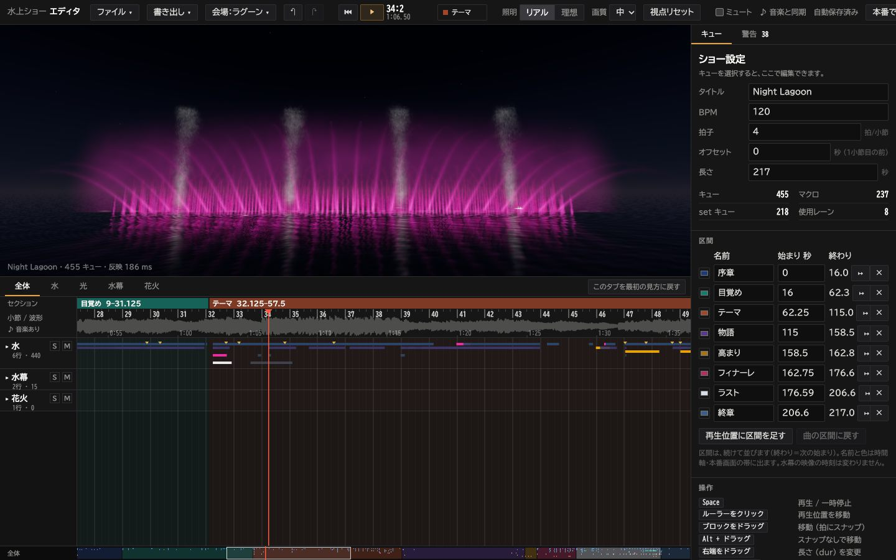
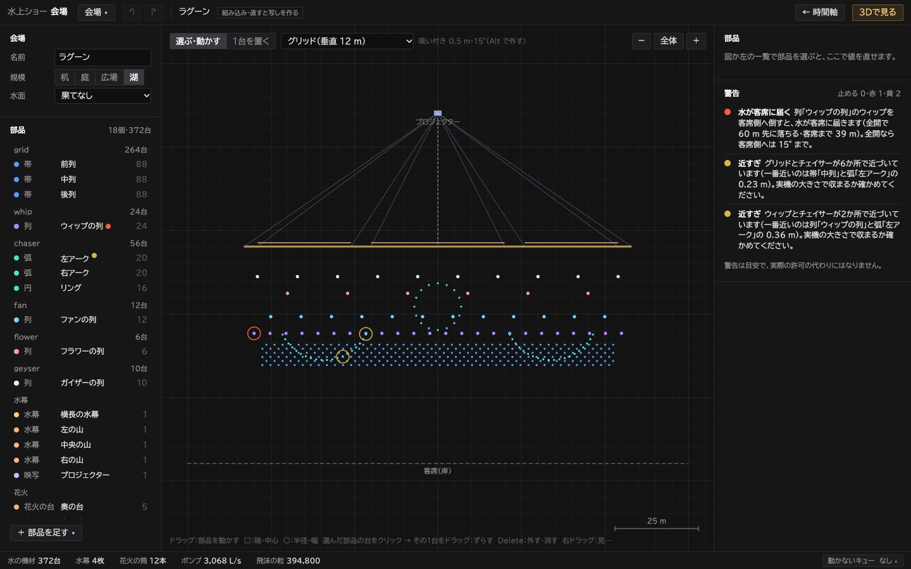
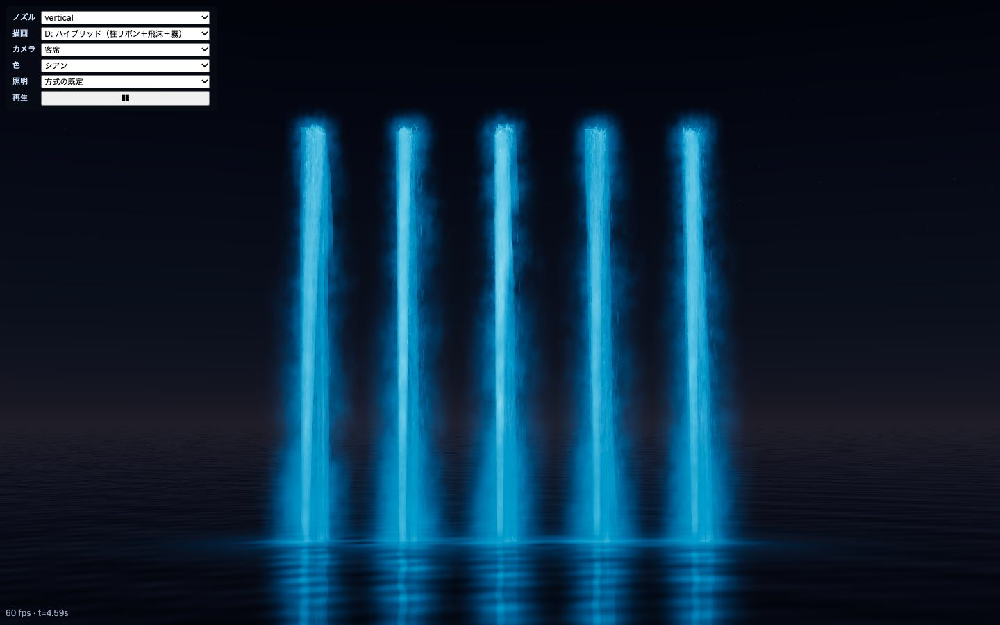

5つのページ
| ページ | URL | 何をする所 |
|---|
| スタート・一覧 | localhost:5199/（index.html） | プロジェクトを選ぶ・作る・名前を変える・複製・削除。 |
| エディタ | edit.html?project=id | 時間軸で演出を作る・直す。警告を見る。実機向けに書き出す（CSV・DMX・Art-Net）。?project なしは確認用（どのプロジェクトにも保存しない。道具の確かめ用）。 |
| 本番画面 | play.html?project=id | ショーを流して観る。カメラ・照明・画質・音量を変える。動画と Vision Pro 180° を書き出す。 |
| 会場 | localhost:5199/venue.html | 噴水を置く場所（会場）を、部品で作る・直す。決まり（止める・赤・黄）で無理を知らせる。 |
| 研究室 | localhost:5199/lab.html | 噴水1種類だけを、描き方を変えて見比べる試験台。ショーを作るときは使わなくてよい。 |

エディタ（edit.html）。上が 3D、下が時間軸、右がキューの設定

会場（venue.html）。真上から見た図で部品を動かす

研究室（lab.html）。左上でノズル・描画・カメラ・色・照明を選ぶ
ページの行き来：一覧のカード → エディタ。エディタの「▶ 本番で再生」→ 本番画面（そのプロジェクト）。本番画面の「← エディタに戻る」→ エディタ。エディタの「← 一覧」→ 一覧。エディタの「会場 ▾」→「この会場を編集 ↗」→ 会場。会場の「← 時間軸」→ 開いた元のエディタ。